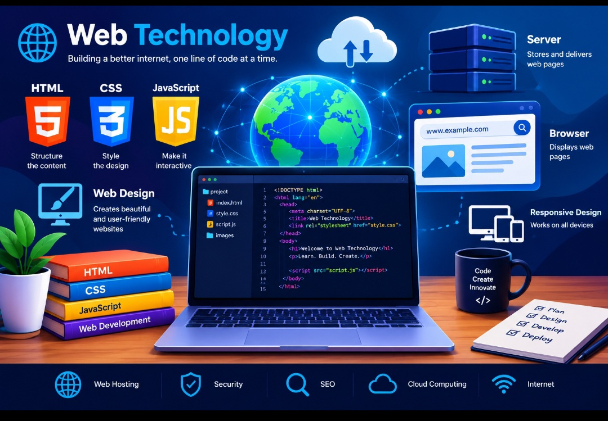

Web Technology Assignment
Aliyu Ibrahim Yau
Reg. No: ND/COM/24/0063
Department: Computer Science
Introduction to Web Technology
Web Technology refers to the various technologies, tools, programming languages, and techniques used to create, design, develop, and maintain websites and web applications.
The World Wide Web has changed the way people interact with information. Websites can contain text, images, audio, videos, animations, and links.
One of the most important technologies used in web development is HTML (HyperText Markup Language). HTML provides the basic structure of a webpage and is used to create headings, paragraphs, links, images, tables, and forms.
CSS (Cascading Style Sheets) is responsible for the appearance and presentation of a webpage. It can be used to change colours, fonts, font sizes, backgrounds, borders, spacing, and layouts.
JavaScript is another important web technology. It is used to make webpages interactive and dynamic. It can create interactive buttons, menus, forms, animations, and other features.
Web technology also involves web servers, databases, web browsers, and Internet protocols. These technologies work together to deliver information and services to users.
Web technology is widely used in education, business, banking, communication, entertainment, and online services. It has become an important part of modern life.
In conclusion, Web Technology is an important part of modern computing. It combines different technologies to create useful, attractive, interactive, and user-friendly websites and web applications.
About Web Technology
Web Technology refers to the different technologies, tools, programming languages, and techniques used to create, develop, design, and maintain websites and web applications. It is an important part of modern computing because it allows people to access and share information through the Internet. Web technology makes it possible for users to communicate, learn, work, shop, access online services, and interact with information from different parts of the world.Web technology includes several important technologies such as HTML, CSS, JavaScript, web servers, databases, web browsers, and Internet protocols. HTML is used to create the structure of a webpage, while CSS is used to control its appearance and layout. JavaScript is used to add interaction and dynamic features to websites. These technologies work together to create websites that are useful, attractive, interactive, and easy to use. Web technology is widely used in many areas of modern life. Educational institutions use websites and web applications to provide learning materials and academic information. Businesses use websites to advertise their products, communicate with customers, and provide online services. Banks and other organizations also use web technologies to provide secure and convenient services to their users. Modern web technology also supports different types of multimedia content, including images, audio, videos, animations, and graphics. These features can make websites more informative and engaging. Web technology continues to develop as new tools and techniques are introduced to improve website performance, security, accessibility, responsiveness, and user experience. In general, Web Technology has become an essential part of the digital world. Understanding its basic concepts gives students and developers the knowledge needed to design, develop, and maintain modern websites and web applications.
Web Technology
HTML
HTML stands for HyperText Markup Language. It is the standard markup language used to create and structure the content of webpages. HTML provides the basic structure of a website by using different elements and tags. It is used to create headings, paragraphs, links, lists, tables, images, forms, audio, videos, and other webpage components. HTML is usually the first technology learned by beginners because it provides the foundation on which other web technologies are built.
CSS
CSS stands for Cascading Style Sheets. It is a stylesheet language used to control the appearance and presentation of webpages. CSS works together with HTML to make a website more attractive, organized, and user-friendly. It can be used to change colours, fonts, font sizes, backgrounds, borders, spacing, alignment, and page layouts. CSS also allows developers to create responsive designs that can display properly on different devices such as computers, tablets, and smartphones.
JavaScript
JavaScript is a programming language used to make webpages interactive and dynamic. While HTML provides the structure and CSS controls the appearance, JavaScript adds functionality to the webpage. It can respond to user actions and perform tasks such as displaying messages, validating forms, changing webpage content, creating interactive menus, handling buttons, and adding animations. JavaScript is an important technology for developing modern and interactive websites and web applications.
Web Technology Images
